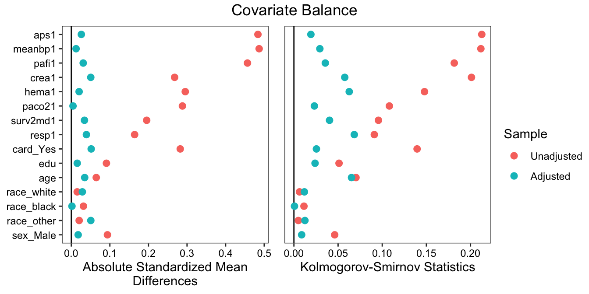

library("MatchIt")
Attaching package: 'MatchIt'The following object is masked from 'package:cobalt':
lalondeTo perform matching, we’ll use the MatchIt package, which provides an interface to many forms of matching and allows for specification of many different options to customize the matching. The MatchIt documentation includes extensive examples and vignettes that should be used to supplement the example here. Much of the information here is simply lifted from this documentation.
library("MatchIt")
Attaching package: 'MatchIt'The following object is masked from 'package:cobalt':
lalondeFor matching, we’ll focus on the ATT, though it is possible for some matching methods to target the ATE as well. The simplest method of matching is 1:1 nearest neighbor propensity score matching, which is the default using matchit(). For more details on this procedure, including effect estimation, see the MatchIt documentation and vignettes.
#1:1 NN propensity score matching w/o replacement
m1 <- matchit(RHC ~ aps1 + meanbp1 + pafi1 + crea1 + hema1 +
paco21 + surv2md1 + resp1 + card + edu +
age + race + sex, data = rhc)
m1A matchit object
- method: 1:1 nearest neighbor matching without replacement
- distance: Propensity score
- estimated with logistic regression
- number of obs.: 5735 (original), 4368 (matched)
- target estimand: ATT
- covariates: aps1, meanbp1, pafi1, crea1, hema1, paco21, surv2md1, resp1, card, edu, age, race, sexWe can use summary() in MatchIt to assess balance, but we’ll stick with cobalt. We can just supply the matchit object to bal.tab(), which contains the treatment and covariate information.
bal.tab(m1, stats = c("m", "ks"), binary = "std")Balance Measures
Type Diff.Adj KS.Adj
distance Distance 0.3765 0.2060
aps1 Contin. 0.2109 0.1103
meanbp1 Contin. -0.1447 0.0728
pafi1 Contin. -0.1650 0.0907
crea1 Contin. 0.1296 0.1282
hema1 Contin. -0.0494 0.0614
paco21 Contin. -0.0699 0.0453
surv2md1 Contin. -0.1087 0.0710
resp1 Contin. -0.1003 0.0755
card_Yes Binary 0.1270 0.0627
edu Contin. 0.0307 0.0343
age Contin. -0.0291 0.0682
race_white Binary 0.0000 0.0000
race_black Binary 0.0038 0.0014
race_other Binary -0.0056 0.0014
sex_Male Binary 0.0362 0.0179
Sample sizes
Control Treated
All 3551 2184
Matched 2184 2184
Unmatched 1367 0Although balanced improved, we still have covariates with unacceptable imbalance, and it is possible to do much better than simple 1:1 matching. Connors et al. (1996) used matching with a caliper on the propensity score; here we’ll do so as well, setting a caliper of .2 standard deviations of the logit of the propensity score, which is an arbitrary but often used caliper width:
m2 <- matchit(RHC ~ aps1 + meanbp1 + pafi1 + crea1 + hema1 +
paco21 + surv2md1 + resp1 + card + edu +
age + race + sex, data = rhc,
link = "linear.logit", caliper = .2)
m2A matchit object
- method: 1:1 nearest neighbor matching without replacement
- distance: Propensity score [caliper]
- estimated with logistic regression and linearized
- caliper: <distance> (0.2)
- number of obs.: 5735 (original), 3868 (matched)
- target estimand: ATT
- covariates: aps1, meanbp1, pafi1, crea1, hema1, paco21, surv2md1, resp1, card, edu, age, race, sexbal.tab(m1, stats = c("m", "ks"), binary = "std")Balance Measures
Type Diff.Adj KS.Adj
distance Distance 0.3765 0.2060
aps1 Contin. 0.2109 0.1103
meanbp1 Contin. -0.1447 0.0728
pafi1 Contin. -0.1650 0.0907
crea1 Contin. 0.1296 0.1282
hema1 Contin. -0.0494 0.0614
paco21 Contin. -0.0699 0.0453
surv2md1 Contin. -0.1087 0.0710
resp1 Contin. -0.1003 0.0755
card_Yes Binary 0.1270 0.0627
edu Contin. 0.0307 0.0343
age Contin. -0.0291 0.0682
race_white Binary 0.0000 0.0000
race_black Binary 0.0038 0.0014
race_other Binary -0.0056 0.0014
sex_Male Binary 0.0362 0.0179
Sample sizes
Control Treated
All 3551 2184
Matched 2184 2184
Unmatched 1367 0We can see that several treated units were discarded, which changes the estimand, though we do see major improvements in balance. There are many methods we can try to improve balance while retaining the estimand, but we’ll use generalized full matching (Sävje, Higgins, and Sekhon 2021) by setting method = "quick", which is fast and tends to perform well in a variety of settings1.
m3 <- matchit(RHC ~ aps1 + meanbp1 + pafi1 + crea1 + hema1 +
paco21 + surv2md1 + resp1 + card + edu +
age + race + sex, data = rhc,
method = "quick")
m3A matchit object
- method: Generalized full matching
- distance: Propensity score
- estimated with logistic regression
- number of obs.: 5735 (original), 5735 (matched)
- target estimand: ATT
- covariates: aps1, meanbp1, pafi1, crea1, hema1, paco21, surv2md1, resp1, card, edu, age, race, sexbal.tab(m3, stats = c("m", "ks"), binary = "std")Balance Measures
Type Diff.Adj KS.Adj
distance Distance -0.0001 0.0050
aps1 Contin. -0.0260 0.0192
meanbp1 Contin. -0.0124 0.0294
pafi1 Contin. -0.0309 0.0355
crea1 Contin. -0.0505 0.0576
hema1 Contin. 0.0203 0.0626
paco21 Contin. 0.0044 0.0231
surv2md1 Contin. 0.0341 0.0403
resp1 Contin. -0.0392 0.0684
card_Yes Binary -0.0516 0.0255
edu Contin. -0.0154 0.0239
age Contin. -0.0347 0.0652
race_white Binary 0.0287 0.0118
race_black Binary 0.0017 0.0006
race_other Binary -0.0506 0.0125
sex_Male Binary 0.0178 0.0088
Sample sizes
Control Treated
All 3551. 2184
Matched (ESS) 1017.28 2184
Matched (Unweighted) 3551. 2184Balance is good and we retained the target estimand, but generalized full matching took a tool on the effective sample size (ESS) of our control group, which is now around 1000 (from around 3500). Even though generalized full matching retains the entire sample (i.e., not a single unit is dropped), the matching weights resulting from it have variability such that the ESS is much lower than the original sample size. There are ways to manage the balance-ESS trade-off that are specific to each matching method.
Although balance isn’t perfect and could be improved with additional fine-tuning, we’ll move forward with this matched sample to demonstrate effect estimation and reporting. First, we need to extract the matched sample from the matchit object using match.data(). This adds columns to the original dataset called "distance", "weights", and "subclass" containing the propensity score, matching weights, and matched strata (i.e., pair membership). When units are dropped in the matching (e.g., when using 1:1 matching), the output will only contain the units remaining in the matched sample2.
md <- match.data(m3)
# Names of new dataset; note the three new variables at the end
names(md) [1] "aps1" "meanbp1" "pafi1" "crea1" "hema1" "paco21"
[7] "surv2md1" "resp1" "card" "edu" "age" "race"
[13] "sex" "RHC" "death" "distance" "weights" "subclass"To estimate the treatment effect, we need to proceed in two steps. First, we fit the outcome model to the matched sample including the matching weights. Second, we compute the treatment effect using g-computation. Our estimand will be the marginal risk ratio for the treated units (i.e., the ATT on the risk ratio scale). We will fit a logistic regression for the outcome, including covariates and their interactions with treatment in the model.
fit <- glm(death ~ RHC * (aps1 + meanbp1 + pafi1 + crea1 + hema1 +
paco21 + surv2md1 + resp1 + card + edu +
age + race + sex),
data = md, weights = weights, family = quasibinomial)There is no value in examining this outcome model; the coefficients are uninterpretable and provide no information about the effects of the included predictors on the outcome (Westreich and Greenland 2013). This model can be arbitrarily complicated and is not designed to be a useful predictive model for the outcome. Its sole purpose is to increase the precision of the resulting effect estimate. We will compute the marginal risks under treatment for each group and compute the risk ratio using g-computation. Here we specify arguments to avg_predictions() to use cluster-robust SEs that account for the matching and restrict the data to the treated units because we are estimating the ATT3.
library("marginaleffects")
avg_predictions(fit, variables = "RHC",
wts = "weights",
vcov = ~subclass,
newdata = subset(md, RHC == 1))
RHC Estimate Pr(>|z|) 2.5 % 97.5 %
0 0.690 <0.001 0.656 0.722
1 0.713 <0.001 0.691 0.734
Columns: RHC, estimate, p.value, conf.low, conf.high We find marginal risks of .69 and .713 for the treated units under control and treatment, respectively. We can compute the risk ratio using the following:
avg_comparisons(fit, variables = "RHC",
wts = "weights",
vcov = ~subclass,
newdata = subset(md, RHC == 1),
comparison = "lnratioavg",
transform = "exp")
Term Contrast Estimate Pr(>|z|) 2.5 % 97.5 %
RHC ln(mean(1) / mean(0)) 1.04 0.138 0.989 1.09
Columns: term, contrast, estimate, p.value, conf.low, conf.high, predicted, predicted_hi, predicted_lo From this we find a risk ratio of 1.04, indicating that the risk of death is 4% higher for those receiving RHC than had they not received it. The confidence interval for the risk ratio is (.989, 1.09), and the p-value for the test that the log risk ratio is equal to 0 (i.e., that the risk ratio is equal to 1) is .138, indicating no evidence for an effect of RHC in either direction.
To report balance, we could include the final balance table above, a visual representation of it, or a summary of balance statistics (or combinations thereof). A clean visual representation of balance is in a Love plot, which can be requested as follows:
love.plot(m3, stats = c("m", "ks"), binary = "std",
drop.distance = TRUE, abs = TRUE)
See the cobalt documentation for more information on using love.plot() to make publication-ready plots.
Optimal full matching (method = "full") tends to work a bit better, but can be much slower for larger datasets.↩︎
Note that this behavior, and the names of the new columns created, can be customized by the user.↩︎
In practice, it is okay to omit the newdata argument, especially when balance is excellent.↩︎